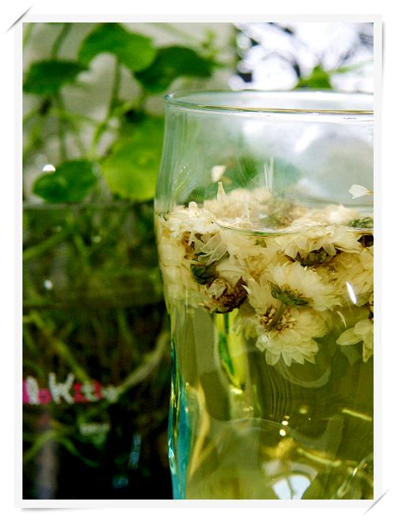
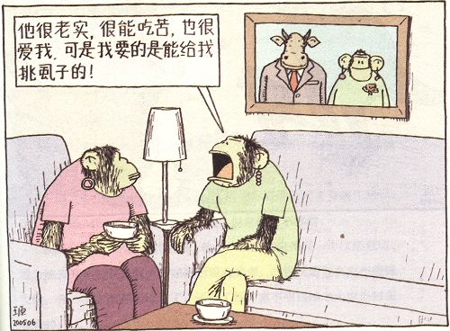
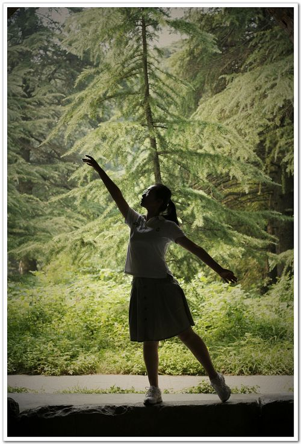
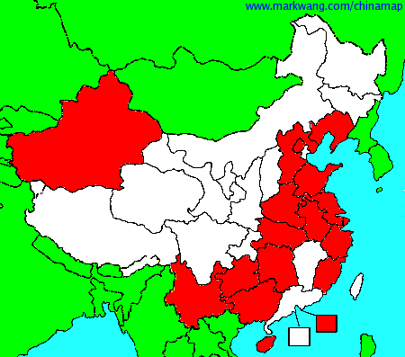

8月28日，晨。 @ Aug 27, 2007
Canon eos 30D
EF-S17-85mm
未做任何图象编辑，很久没有摸相机，手痒。
Canon eos 30D
EF-S17-85mm
未做任何图象编辑，很久没有摸相机，手痒。
得知小说《追风筝的人》将被拍成电影，欣喜万分。曾有人说最好的文学作品反而词语简洁明了，没有太过华丽的修饰，这部小说给我的感觉正是如此，情节扣人心弦。该书甚至曾一度将《达·芬奇密码》挤下了美国畅销书排行榜冠军宝座，且最初上市未做任何宣传，完全靠读者口碑相传火起来的。影片由梦工厂操刀制作，曾执导过《寻找梦幻岛》、《死囚之舞》等影片的导演马克·福斯特任导演。剧组先在网站上进行海选，挑选了两名阿富汗小朋友饰演主人公阿米尔和哈桑，曾在阿巴斯电影《橄榄树下的情人》中担任主角的侯赛因·莱扎伊在片中扮演主人公阿米尔的成年时代一角。
电影《追风筝的人》海报

有些忙有些累，连着三天去“手佳”按摩，并且第一次尝试了精油推拿，舒服的同时可改善皮肤干燥，就是，就是那个浴巾不是我的卫生标准，以后自己带浴巾过去。星期一的办公桌落寞而凌乱，植物生出几片黄叶，枯萎的迹象没有安全感。七夕收到女友有趣的短信“原来爱情是这样的：看了神雕侠侣知道年龄不是问题；看了断臂山知道性别不是问题；看了金刚发现原来物种也不是问题；想起人鬼情未了才真正懂得死活都不是问题！七夕快乐~”
今天收到一个从柬埔寨带回来的礼物，银质首饰盒，漂亮的质感雕刻~

8月15日，我的生日。
本想不动声色度过这个生日，可一早..甚至是午夜12点就收到祝福的短信，很感动~~此时能真正感受到被人牵挂的感觉很温暖！
15日中午，最让人感动的是午餐进行到结尾时，服务员推着生日蛋糕和香槟唱着生日歌进来的情形。不知道有多久没和同事们聚聚餐聊聊天，两年？恍如隔世，生日只是相聚的一个理由，是对往日时光的温顾知新。如今各忙各的，各有各的压力，10年后我们这帮人不知道有多少人还在这个公司工作？

电影主题曲《爱情转移》
曲：Christopher Chak 词：林夕 唱：陈奕迅
徘徊过多少橱窗 住过多少旅馆
才会觉得分离也并不冤枉
感情是用来浏览 还是用来珍藏
好让日子天天都过得难忘
熬过了多久患难 湿了多长眼眶
才能知道伤感是爱的遗产
流浪几张双人床 换过几次信仰
才让戒指义无返顾的交换
把一个人的温暖 转移到另一个的胸膛
让上次犯的错反省出梦想
每个人都是这样 享受过提心吊胆
才拒绝做爱情待罪的羔羊
会议是捉不到的月光握紧就变黑暗
等虚假的背影消失于晴朗
阳光在身上流转 等所有业障被原谅
爱情不停站 想开往地老天荒
需要多勇敢
烛光照亮了晚餐 照不出个答案
恋爱不是温馨的请客吃饭
床单上铺满花瓣 拥抱让它成长
太拥挤就开到了别的土壤
感情需要人接班 接近换来期望
期望带来失望的恶性循环
短暂的总是浪漫 漫长总会不满
烧完美好青春换一个老伴
你不要失望 荡气回肠是为了
最美的平凡
朋友说：“表情丰富的的孩子大多聪明。”这个小帅哥才3个月，表情如此丰富，可爱的让人想捏捏他那胖嘟嘟的小脸蛋！日子过得真是恍如瞬间，好象还是小女孩的Cherry已经有了这么可爱的宝贝！宝贝的眼睛象爸爸，嘴唇似乎象妈妈多一些。Cherry分娩之后特有的丰腴体型透着一股幸福和满足的奶香味儿~
入秋第一天，上火。
嘴唇、下巴上冒出红红的疙瘩。

手上两件事令我颇为烦躁，一是黄金退运，一是佣金。
这两件事的压力来自时间上的限制，一个是海关给的，一个是信用给的。
更令人在酷暑的早晨恼火的是，打扫卫生的阿姨不知用拖过什么地方的拖把打扫办公室？一股臭鸡蛋味儿，比起以前她倒是不用每次叮嘱，算是尽责了，但依然是无语。还是那个观点，有智慧会思考的人即使卖茶叶蛋也能卖出市场和口碑，打扫卫生和做家庭主妇也是同样的道理。
这些事情带来的情绪烦躁，让我听不到自己的声音。可是内心却极为安静~
拿到网上购买的《无目的的美好生活》，晚上回家狠狠地阅读了N篇，有的是洪晃BLOG上看过的，有的对于我是新鲜的文字。真是羡慕妒忌恨啊，我这辈子估计是拥有不了这样的风趣幽默，酣畅淋漓，很难达到“走自己的路让驴说去”的境界 （中国茶某位访客的留言）。有个小朋友问：“她生活中是不是真的象书中表达的那样表达她自己呢？”“也许更豪爽呢？

下面要谈的是“但是”，但是这本书行间距过大，行与行之间约为6毫米，专业点说那个啥注水猪肉，是这样说的吧？缩短到3-4毫米，也许让人感觉实在些？读者不会因为一本书有多厚多重多精美的包装而掏钱购买它，至少我不会这么做，重要的是里面的内容。即使它变成一50页的手抄本，价格仍然卖25元，我也不会拒绝的。里面的彩色插画有意思，我一同事拿起这书时光注意看插画了。有魅力的书和有魅力的人一样根本不需要花哨的打扮，人们可以拒绝美丽，但拒绝不了迷人。喜欢洪晃，不过这样的女人跟恐龙一样快绝种了，即使有个别侥幸存在，环境是相当恶劣滴~你还要有资本~

《无目的的美好生活》，按照洪晃文字里的逻辑，媒体分为有目的VS有理想的，换个书名是不是可以叫《有理想的美好生活》？这种理解来自其中一篇《脑风暴》。顺便提一下，订购了洪晃全年的《ILOOK》，为何时尚杂志的封面必须是美女帅哥？均采用16开的尺寸，殊不知上班族随身携带阅读多么的不方便！简约也是时尚，简约的封面设计可以在时尚杂志中独树一帜，形成鲜明的形象，就跟看到彩色条纹马上想到paul smith，哪天看到某种设计，不用看文字脑子里反应出的信息：“哦，这是洪晃的杂志...”同时自恋的说一下，Chinese Tea延用了5年多的紫色系背景，是不是也会给人留下深刻的BLOG印象？以前我特逃避别人说我自恋，现在我觉得喜欢自己有什么不好？自恋有利身心健康，不是吗？
洪晃的“七分人性，三分完美”比“十分的完美”更可爱，十分完美的人说着别人爱听的话，展示着别人喜欢的微笑，穿着别人顺眼的衣服，特厌恶这样的人，稍有判断力的，很快就能识破那些不真实的表象，当华宴散去，心中留下最多的是空洞和孤独，人前人后做的周到，那颗心才是最累，这当是低能的思维？高手一般时不时卖个破绽给你，就跟自嘲的水平......

这本书的封底上有两句是这样的：
要脸的跟着别人的感觉走；
不要脸的跟着自己的感觉走。
---《我们VS他们》
Yucheng说：“跟着别人的感觉走，不一定是要脸的。可能只是要立牌坊。而跟着自己的感觉走，不一定就是不要脸的，但，一定要，要心的。”她常常爆出狂经典的总结，让人爱死她~
说不上究竟哪句是褒义，哪句是贬义，就象人生不分好与坏，看你自己要什么？要成为什么样的人？至于“驴”说了什么，那根本不是人考虑的问题。
和姐姐还有外甥女去了东郊，游人不少，只是温度渐渐升高，上午10点钟的四方城已经是37度高温了，到了城里户外已达40度。植物被烈日高温烤得无精打采，即使不动皮肤上也会布满细小的汗珠。可是建筑工人有的还在酷暑中工作，有的三五成群躲在树荫下乘凉，不喜欢也不希望看到这样的情景，心里会不舒服，有时候生活那么美好，可永远不是你想象中的那种美好，它有自己的脾气，从不按照你希望的那样行事。希望大家都能拥有美好的生活。
more pix here

一只被猎人追赶的狐狸，紧急向樵夫求救，樵夫让它躲进自己的小茅屋里。不久，猎人赶到了，追问樵夫是否看到一只狐狸经过？樵夫口头上说没有看到，手却指向狐狸躲藏的地方。狐狸看猎人走了，没有向樵夫道谢就要离开。樵夫责备它不知感恩，狐狸回答道：“如果你表里如一，我会向你道谢的。”
----口蜜腹剑、耍两面派的人不可不防，很多事端都是由他们引起，而企业里有许多这种两面人在大家面前假装义气，够朋友，但私底下却揭人隐私到处造谣。
看完这则故事，想起以朋友相称的某人，得到你的信任进入你最真实的内心，转过身的面孔却是别样的。第一次你知道了不相信...第二次不愿确定，但渐渐疏远这样的关系...第三次你不寒而栗，尤其当某人仍然展露“微笑与关怀”时。世上各种各样的人都有，你不会苦思冥想对方为何这么做，你不会为此困惑，你接受对方就是各种各样中的一个，你需要的是作为朋友的一颗真心，对于矛盾友善的交流。找到真正的朋友就象淘金一样是需要过滤掉沙子的。
识别并防范口蜜腹剑的人是一种智慧，不知这种智慧是否可以学习？
在日落酒馆上发现这个好玩的网站，你在中国有去过哪些地区？路过的不算，生成你自己的中国行走地图，看看你的红色遍及中国哪些位置吧~下面是我旅行、停留、生活过的“红色”。还有那么多地方没去过呢~
